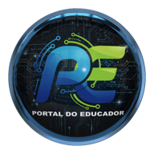

A Química VR junta dois temas: a tabela periódica em 3D, com os 118 elementos e o átomo em camadas de cada um, e o teste de chama, feito numa bancada de laboratório virtual com bico de Bunsen, alça, ácido e sete sais. São 10 missões, 134 fichas e dois níveis de profundidade (Introdutório e Ensino Médio, em Ajustes). O ponto alto é a Viagem ao átomo: o aluno encolhe e atravessa as camadas M, L e K de um átomo de sódio até o núcleo, e depois assiste ao salto do elétron que deixa a chama amarela.
| Formato | Como fica a aula | Equipamento |
|---|---|---|
| Lousa ou projetor (professor conduz) | O professor toca nos elementos, abre o átomo de cada um e leva os sais à chama; a turma prevê a cor antes. Ideal para o Contexto e para o Desafio como quiz coletivo. | Lousa digital, TV ou projetor + um computador |
| Chromebook em duplas | Cada dupla faz a Aula guiada no próprio ritmo; o relatório do professor sai por dupla. | 1 Chromebook a cada 2 alunos; fone opcional |
| Estação VR com rodízio | No óculos, a tabela vira uma parede de mais de três metros e a bancada fica na frente do aluno. A Viagem ao átomo é a experiência mais marcante. Ver seção 5. | Óculos VR autônomo (navegador do óculos, link HTTPS) |
| Missão | Habilidades BNCC | O que o aluno evidencia |
|---|---|---|
| Contexto (gota → molécula → átomo → tabela) | EF09CI01 modelo de constituição submicroscópica da matéria | Reconhece que a matéria é formada por átomos e moléculas e que cada elemento é definido pelo número de prótons. |
| Explorar e Viagem ao átomo | EF09CI03 modelos de estrutura da matéria (constituição do átomo) | Descreve núcleo (prótons e nêutrons) e eletrosfera em camadas; relaciona período ao número de camadas e família aos elétrons da última camada. |
| Monte o átomo | EF09CI03 | Monta átomos e íons com prótons, nêutrons e elétrons; reconhece que o número de prótons define o elemento, que prótons + nêutrons dão o número de massa e que a diferença entre prótons e elétrons dá a carga. |
| Metal, ametal ou gás nobre | EF09CI03 | Localiza elementos na tabela e classifica pela posição e pelas propriedades. |
| Contexto da chama e Bancada | EF09CI03 · EM13CNT301 (aprofundamento) | Explica a cor da chama pelo salto e retorno do elétron; interpreta o resultado de um experimento. |
| Passo a passo | EM13CNT301 · EM13CNT306 | Ordena o procedimento e justifica cada etapa, incluindo a limpeza da alça e os cuidados de segurança. |
EF09CI01: investigar as mudanças de estado físico da matéria e explicar essas transformações com base no modelo de constituição submicroscópica. EF09CI03: identificar modelos que descrevem a estrutura da matéria (constituição do átomo e composição de moléculas simples) e reconhecer sua evolução histórica. EM13CNT301: construir questões, elaborar hipóteses e interpretar modelos e resultados experimentais. EM13CNT306: avaliar riscos e justificar comportamentos de segurança. Confirme com o currículo da rede.
Avaliação: tabela com os cinco elementos; acertos na classificação.
Avaliação: quadro previsão × resultado; explicação escrita do salto do elétron.
| Aula | Tema e pergunta | Na aplicação | Produto do aluno |
|---|---|---|---|
| 1 | Elementos · Do que tudo é feito? | Contexto, Explorar, Metal ou ametal? | Ficha de cinco elementos |
| 2 | Imersão · Como é o átomo por dentro? | Viagem ao átomo (VR em rodízio), Desafio da tabela. | Desenho do átomo de sódio em camadas, com legenda |
| 3 | Experimento · Por que cada elemento tem uma cor? | Tema Teste de chama completo, Relatório do professor. | Relatório de experimento (hipótese, procedimento, resultado, conclusão) |
Ao final, Resumo → Relatório do professor gera uma página com escola, turma, aluno ou grupo, missões concluídas, tentativas e o resultado dos Desafios. Pode ser impresso, salvo em PDF ou arquivado em HTML. Os dados ficam só no dispositivo.
| O que ler | Como interpretar |
|---|---|
| Elementos investigados | Mostram o percurso no Explorar; poucas fichas com Desafio fraco pedem retomada de período e família. |
| Metal, ametal ou gás nobre | Erro comum: chamar o cloro de gás nobre por estar ao lado da última coluna. Vale retomar a ideia de camada completa. |
| Passo a passo do teste | Quem pula a limpeza da alça ainda não entendeu que a cor identifica o metal: restos de outro sal mudam o resultado. |